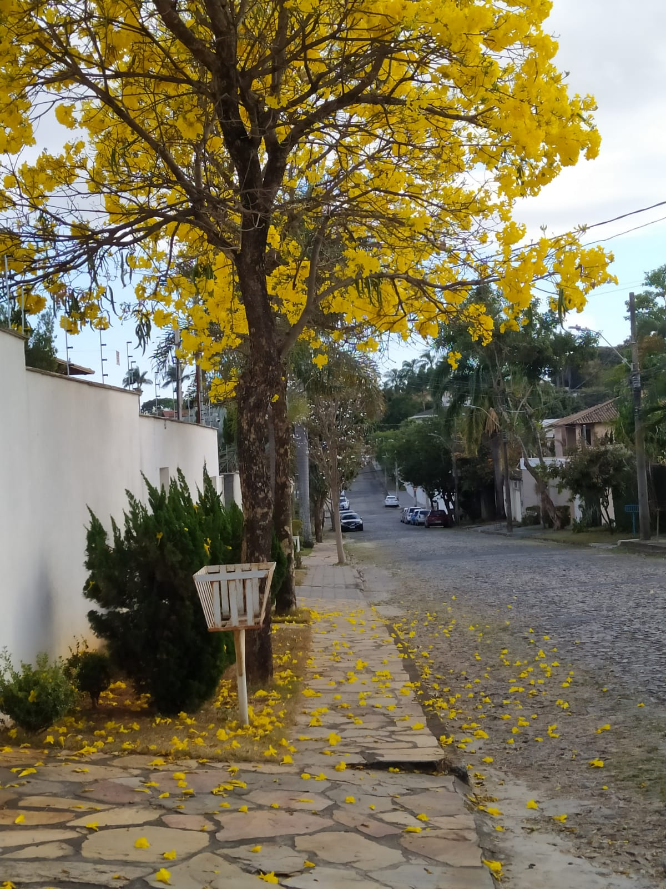

Belo Horizonte é uma cidade que sem dúvida tem potencial pra agradar
diversos publicos. Sua diversidade de pontos turísticos e cenários vão de
desde bares movimentados no centro, até belas paisagens naturais, como a
Lagoa da Pampulha e parques.
Rica em cultura e história mas também movimentada e técnológica, o
Circúito da Liberdade proporciona os dois, com seus museus
interativos e exposições itinerantes.
Venha conhecer neste site um pouco deste universo que, mesmo sendo a sexta
maior cidade do Brasil, ainda mantém um ar de interior.
Curiosidades
Em Belo Horizonte é possível encontrar uma grande variedade de queijos
artesanais
Em certas épocas do ano, os Ipês florecem e enfeitam a cidade

A Lagoa da Pampulha, com 18 quilômetros de extensão, representa um
belo cenário para diversas atividades
Belo Horizonte também é decorada pelos seus artistas